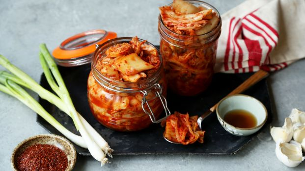
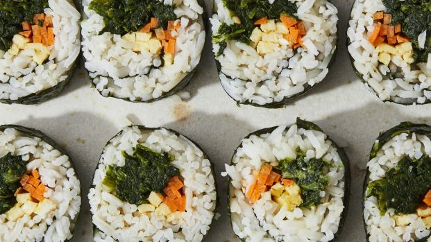
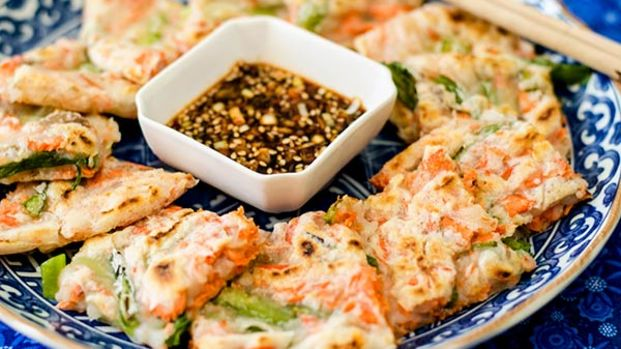

Kimchi
This, salty, spicy, funky ferment is one of the bases of Korean cuisine. Typically made with napa cabbage, white radishes and other vegetables, there are many different types that vary from north to south, and from family to family. It's normally served as banchan (a small side dish), but can also be cooked into dishes like kimchi-jjigae (kimchi stew).
Gimbap
Gimbap is, for all intents and purposes, the Korean descendant of Japanese makizushi, a holdover from the era of Japanese occupation. While Japanese makizushi is seasoned with rice vinegar, the rice in Korean gimbap is seasoned with sesame oil, and the center of the roll often contains multiple ingredients—from tuna to kimchi, and even deli meats and cheeses.
Salmon & Scallion Pajeon
These scallion pancakes are highly customizable. Swap the salmon for squid, clams, shrimp... whatever you'd like. Don't forget the spicy soy dipping sauce!